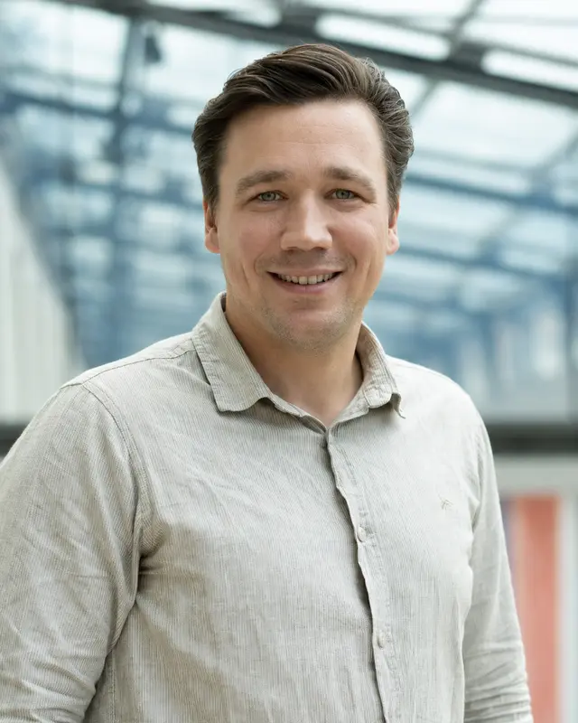

2025–present
Internal Tenure-Track Position
Medical University of Vienna
Group Head
Competence Center Artificial Intelligence in Dentistry
Medical University of Vienna

Profile
2025–present
Medical University of Vienna
2024–present
University Clinic of Dentistry, Medical University of Vienna
2024–present
Clemson University
2024
Medical University of Vienna
2017–2024
Medical University of Vienna
2020
Medical University of Vienna
2014–2016; 2017
University of Saskatchewan
2016
University of Saskatchewan
2012
UAS Technikum Wien